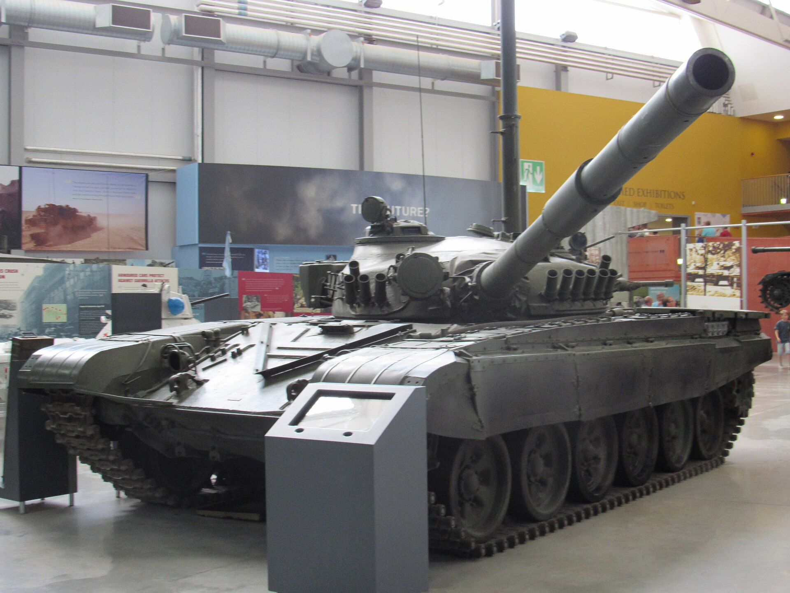

Jorge Puente García
Jorge Puente García
Sitio personal · Jorge Puente García
Tanques, aviones y museos.
Me gustan los tanques y los aviones de combate. Disfruto descubriendo sus detalles en museos y viendo cómo aparecen en películas, juegos y otros medios. Aquí comparto lo que voy encontrando.
